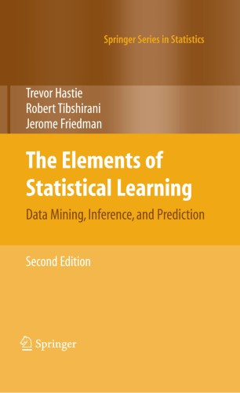

MA8701 Advanced methods in statistical inference and learning
L1: Introduction and core concepts
Course homepage: https://wiki.math.ntnu.no/ma8701/2023v/start
Course topics
The starting point is that we cover important parts of
The Elements of Statistical Learning: Data Mining, Inference, and Prediction, Second Edition (Springer Series in Statistics, 2009) by Trevor Hastie, Robert Tibshirani, and Jerome Friedman.
but, since the book is from 2009 (2nd edition, 12th corrected printing from 2017) this means that for many topic we need (to be up to date) additional selected material in the form of book chapters and research articles.
Download book at https://hastie.su.domains/ElemStatLearn/download.html (this is 12th corrected printing) or sign in at NTNU vpn at Springer (but I am not sure if this is an earlier print without the version 12 corrections).

Part 1: Core concepts [3 weeks]
Sort out assumed background knowledge, and learn something new
- Notation
- Repetition of core concepts (regression and classification)
- Statistical decision theoretic framework (partly new) ELS 2.4
- Model selection and model assessment - including bias-variance trade-off (mostly new) ELS 7
- Handbook of Missing Data Methology (parts of Chapters 11-12, partly 13) and Flexible Imputation of Missing Data (parts of Chapters 2-4)
Part 2: Shrinkage and regularization [3 weeks]
or “Regularized linear and generalized linear models”, with focus on the ridge and lasso regression (in detail).
- ELS 3.2.3,3.4, 3.8, 4.4.4.
- Hastie, Tibshirani, Wainwright (HTW): “Statistical Learning with Sparsity: The Lasso and Generalizations”. Selected sections from Chapters 1,2,3,4,6.
- Selective inference (articles)
Part 3: Ensembles [4 weeks]
- trees, bagging and random forests
- xgboost
- general ensembles (including super learner)
- hyper-parameter tuning
Selected Chapters in ELS (8.7, 8.8, 9.2, parts of 10, 15, 16) and several articles.
Part 4: XAI [2 weeks]
Lectured by Kjersti Aas https://www.nr.no/~kjersti/.
Interpretable Machine Learning: A Guide for Making Black Box Models Explainable, Molnar (2019), with the following topics:
- LIME,
- partial dependence plots,
- Shapley values,
- relative weights and
- counterfactuals.
Part 5: Closing [2 weeks]
“Required” previous knowledge
- TMA4267 Linear statistical methods
- TMA4268 Statistical learning
- TMA4295 Statistical inference
- TMA4300 Computer intensive statistical methods
- TMA4315 Generalized linear models
- Good understanding and experience with R, or with Python, for statistical data analysis.
- Knowledge of markdown for writing reports and presentations (Rmarkdown/Quarto, Jupyther).
- Skills in group work - possibly using git or other collaborative tools.
Some observations about the course
- Mainly a frequentist course, but some of the concepts and methods have a Bayesian version that might give insight into why and how the methods work. Then Bayesian methods will be used.
- Focus is on regression and classification, and unsupervised learning is not planned to be part of the course.
- The required previous knowledge is listed because this is a phd-course designed for statistics studenets. The background make the students go past an overview level of understanding of the course parts (move from algorithmic to deep understanding).
Learning
Learning outcome
1. Knowledge
- Understand and explain the central theoretical aspects in statistical inference and learning.
- Understand and explain how to use methods from statistical inference and learning to perform a sound data analysis.
- Be able to evaluate strengths and weaknesses for the methods and choose between different methods in a given data analysis situation.
2. Skills
Be able to analyse a dataset using methods from statistical inference and learning in practice (using R or Python), and give a good presentation and discussion of the choices done and the results found.
3. Competence
- The students will be able to participate in scientific discussions, read research presented in statistical journals.
- They will be able to participate in applied projects, and analyse data using methods from statistical inference and learning.
Learning methods and activities
Herbert A. Simon (Cognitive science, Nobel Laureate): Learning results from what the student does and thinks and only from what the student does and thinks. The teacher can advance learning only by influencing what the student does to learn.
Course elements
Course wiki at https://wiki.math.ntnu.no/ma8701/2023v/start
Lectures
Office hours (poll?)
Problem sets to work on between lectures.
Study techniques (share)
Ethical considerations
Compulsory work
Final individual oral exam in May
The learning material is also available at https://github.com/mettelang/MA8701V2023.
Questions?
Class activity
Aim: get to know each other - to improve on subsequent group work!
Code
while (at least one student not presented)
lecturer give two alternatives, you choose one.
lecturer choose a few students to present their view
together with giving their name and study programme
(and say if they are looking for group members)- Dog person or cat person?
- When performing logistic regression - do you then say you do statistical learning or machine learning?
- I will show you the result of a descriptive analysis: table summary or graphical display?
- Learning something new: read a book or watch a video?
- Analysing data: R or python?
- Analysing data: report p-values and or confidence intervals
- In class: taking notes or not?
- Use camel case or snake case for programming?
camel: writing compound words such that each word in the middle of the phrase begins with a capital letter, with no intervening spaces or punctuation. “camelCase” or “CamelCase”.
snake: writing compound words where the elements are separated with one underscore character (_) and no spaces, with each element’s initial letter usually lower cased within the compound and the first letter either upper- or lower case as in “foo_bar”
Tentative plan for part 1
(progress may be faster or slower than indicated)
L1
Notation, regression and statistical theoretic framework
- Notation (ELS Ch 2.2)
- Regression - should not be new (ELS Ch 3, except 3.2.3, 3.2.4, 3.4, 3.7, 3.8)
- Statistical decision theoretic framework for regression (ELS 2.4)
L2
Continue with the same framework but for classification, if time also bias-variance trade-off
- Classification - should not be new (ELS Ch 4.1-4.5, except 4.4.4)
- Statistical decision theoretic framework for classification (ELS 2.4)
- and the bias-variance trade-off
W2
L3-4: Then, cover new aspects for
- Model selection and assessment (ELS Ch 7.1-7.6, 7.10-7.12)
W3
L5-6
- How to handle missing data in data analyses
Core concepts
Notation
(mainly from ELS 2.2)
We will only consider supervised methods.
- Response \(Y\) (or \(G\)): dependent variable, outcome, usually univariate (but may be multivariate)
- quantitative \(Y\): for regression
- qualitative, categorical \(G\): for classification, some times dummy variable coding used (named one-hot coding in machine learning)
- Covariates \(X_1, X_2, \ldots, X_p\): “independent variables”, predictors, features
- continuous, discrete: used directly
- categorical, discrete: often dummy variable coding used
We aim to construct a rule, function, learner: \(f(X)\), to predict \(Y\) (or \(G\)).
Random variables and (column) vectors are written as uppercase letters \(X\), and \(Y\), while observed values are written with lowercase \((x,y)\). (Dimensions specified if needed.)
Matrices are presented with uppercase boldface: \(\boldsymbol{X}\), often \(N \times (p+1)\).
ELS uses boldface also for \(\boldsymbol{x}_j\) being a vector of all \(N\) observations of variable \(j\), but in general vectors are not boldface and the vector of observed variables for observation \(i\) is just \(x_i\).
Random variables and random vectors
Both the response and covariates will be considered to be random, and drawn from some joint distribution \(P(X_1,X_2,\ldots, X_p,Y)=P(X,Y)\) or \(P(X,G)\).
Joint to conditional and marginal distribution: \(P(X,Y)=P(Y \mid X)P(X)\) or \(P(Y\mid X=x)P(X=x)\) or
\[P(Y=y ,X=x)=P(Y=y\mid X=x)P(X=x)\]
Maybe brush up on this?
Resources
- From TMA4268: Module 2 - Random vectors
- From TMA4267: Part 1: Multivariate random variables and the multivariate normal distribution
Training set
(ELS 2.1)
A set of size \(N\) of independent pairs ov observations \((x_i,y_i)\) is called the training set and often denoted \(\mathcal{T}\). Here \(x_i\) may be a vector.
The training data is used to estimate the unknown function \(f\).
Validation and test data
Validation data is used for model selection (finding the best model among a candidate set).
Test data is used for model assessment (assess the performance of the fitted model on future data).
We will consider theoretical results, and also look at different ways to split or resample available data.
More in ELS Chapter 7.
Group discussion
Two core regression methods are multiple linear regression (MLR) and \(k\)-nearest neighbour (kNN).
For the two methods
- Set up the formal definition for \(f\), and model assumptions made
- What top results do you remember? Write them down.
- What are challenges?
Regression and MLR
See also the exercises!
Resources
(mostly what we learned in TMA4267, or ELS Ch 3, except 3.2.3, 3.2.4, 3.4, 3.7, 3.8)
- From TMA4268: Overview and in particular Module 3: Linear regression
- From TMA4315: Overview and in particular Module 2: MLR
For \(k\)NN see also Problem 1 of the TMA4268 2018 exam with solutions
Statistical decision theoretic framework
(ELS Ch 2.4, regression part)
is a mathematical framework for developing models \(f\) - and assessing optimality.
First, regression:
- \(X \in \Re^p\)
- \(Y \in \Re\)
- \(P(X,Y)\) joint distribution of covariates and respons
Aim: find a function \(f(X)\) for predicting \(Y\) from some inputs \(X\).
Ingredients: Loss function \(L(Y,f(X))\) - for penalizing errors in the prediction.
Criterion for choosing \(f\): Expected prediction error (EPE)
\[ \text{EPE}(f)=\text{E}_{X,Y}[L(Y,f(X))]=\int_{x,y}L(y,f(x))p(x,y)dxdy\] Choose \(f\) to minimize the \(\text{EPE}(f)\).
Q: Why do we not involve the distribution of the random variable \(f(X)\), but instead the distribution of \(X\)?
Law of the unconscious statistican (from our introductory course in statistics): https://en.wikipedia.org/wiki/Law_of_the_unconscious_statistician and Thematics pages TMA4240/45.
What is the most popular loss function for regression?
Squared error loss
\[ \text{EPE}(f)=\text{E}_{X,Y}[L(Y,f(X))]=\text{E}_{X}\text{E}_{Y \mid X}[(Y-f(X))^2\mid X]\]
We want to minimize EPE, and see that it is sufficient to minimize \(\text{E}_{Y\mid X}[(Y-f(X))^2\mid X]\) for each \(X=x\) (pointwise):
\[ f(x)=\text{argmin}_c \text{E}_{Y \mid X}[(Y-c)^2 \mid X=x]\] This gives as result the conditional expectation - the best prediction at any point \(X=x\):
\[ f(x)=\text{E}[Y \mid X=x]\] Proof: by differentiating and setting equal 0.
But, do we know this conditional distribution? In practice: need to estimate \(f\).
What is the joint distribution is multivariate normal?
Conditionally (known from before): if we assume that \((X,Y) \sim N_{p+1}(\mu,\Sigma)\) then we have seen (TMA4267) that \(\text{E}(Y\mid X)\) is linear in \(X\) and \(\text{Cov}(Y \mid X)\) is independent of \(X\).
Approximate linear model
But, also if we assume an approximate linear model: \(f(x)\approx x^T \beta\)
Marginally: \(\text{argmin}_{\beta} \text{E}[(Y-X^T\beta)^2]\) gives \(\beta=\text{E}[X X^T]^{-1}\text{E}[XY]\) (now random vectors).
We may replace expectations with averages in training data to estimate \(\beta\).
This is not conditional on \(X\), but we have assumed a linear relationship.
kNN and conditional expectation
Local conditional mean for observations in \(\cal T\) close to \(\bf{x}_0\): \[\hat{f}({\bf x}_0)=\frac{1}{k}\sum_{i \in \cal N_k({\bf x}_0)}Y_i\]
Absolute loss
Regression with absolute (L1) loss: \(L(Y,f(X))=\lvert Y-f(X) \rvert\) gives \(\hat{f}(x)=\text{median}(Y\mid X=x)\).
Proof: for example pages 8-11 of https://getd.libs.uga.edu/pdfs/ma_james_c_201412_ms.pdf
Exercises
1: Law of total expectation and total variance
This is to get a feeling of the joint and conditional distributions, so that we understand expected value notation with joint, conditional and marginal distributions.
Give a derivation of the law of total expectation:
\[\text{E}[X]=\text{E}[\text{E}(X\mid Y)]\]
and the law of total variance: \[\text{Var}[X]=\text{E}\text{Var}[X \mid Y]+\text{Var}\text{E}[X\mid Y]\] (There is also a law of total covariance.)
2: Quadratic loss and decision theoretic framework
Show that \(f(x)=\text{E}[Y \mid X=x]\) for the quadratic loss.
3: Curse of dimensionality
Read pages 22-23 and then answer Exercise 2.3 - which is to “Derive equation (2.24).”
Important take home messages:
- All sample points are close to an edge of the sample.
- If data are uniformly distributed in an hypercube in \(p\) dimensions, we need to cover \(r^{1/p}\) of the the range of each input variable to capture a fraction \(r\) of the observations.
4: Key results from MLR
(These results are known from TMA4267 and TMA4315, but useful to brush up on?)
Assume we have a data set with independent observation pairs \((y_i,{\bf x}_i)\) for \(i=1,\ldots,N\).
\[{\bf Y=X \boldsymbol{\beta}}+{\bf\varepsilon}\] where \({\bf Y}\) is a \(N \times 1\) random column vector, \({\bf X}\) a \(N \times (p+1)\) design matrix with row for observations (\({\bf x}^T_i\)) and columns for covariates, and \({\bf{\varepsilon}}\) \(N \times 1\) random column vector
The assumptions for the classical linear model is:
\(\text{E}(\bf{\varepsilon})=\bf{0}\).
\(\text{Cov}(\varepsilon)=\text{E}(\varepsilon \varepsilon^T)=\sigma^2\bf{I}\).
The design matrix has full rank, \(\text{rank}({\bf X})=(p+1)\).
The classical normal linear regression model is obtained if additionally
- \(\varepsilon\sim N_n(\bf{0},\sigma^2\bf{I})\) holds.
For random covariates these assumptions are to be understood conditionally on \(\bf{X}\).
a) Regression parameter estimator
Derive the least squares (or the maximum likelihood estimator) for \(\hat{\beta}\).
b) Properties of regression parameter estimator
Derive the distribution of \(\hat{\beta}\) (when assumption 4 is true).
c) Estimator for variance
Explain how we may find the restricted maximum likelihood estimator for \(\sigma^2\). Which distribution is used for inference for \(\sigma^2\)?
d) Hypothesis test
How would you test the hypothesis \(H_0: \beta_j=0\) against \(H_1: \beta_j\neq 0\)?
e) Explanability
Explanability is now very important - but then we usually talk about black box models. How would you explain the impact of each covariate in a multiple linear regression model? Can you give the proportion of the varibility that each variable is responsible for explaining?
Solutions to exercises
Please try yourself first, or take a small peek - and try some more - before fully reading the solutions. Report errors or improvements to Mette.Langaas@ntnu.no. (The solutions given here are very similar to the UiO STK-IN4300 solutions, see link under References.)
1: Law of total E and Var
2: Quadratic loss
Page 8 of https://getd.libs.uga.edu/pdfs/ma_james_c_201412_ms.pdf
3: Curse of dimensionality
4: Key results from MLR
a) Regression parameter estimator
Both methods are written out in these class notes from TMA4267/8. More on likelihood-version here: TMA4315 GLM Module 2.
b) Properties of regression estimator
c) Estimator for variance
d) Hypothesis test
e)
Standardized regression coefficients, estimated regression coefficients divided by their standard errors, is the most used solution. But, also popular is the decomposition of the \(R^2\) - easy for orthogonal design matrix, but not easy for correlated covariates. The LMG-method of Grömping (2007) (decomposing \(R^2\)) gives a solution that is also valid with correlated covariates, that is identical to the Shapley value of Part 4 (more later).
Reference links
ELS official errata: and choose “Errata” in the left menu